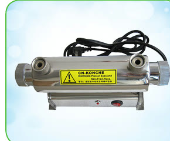
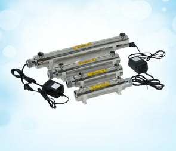
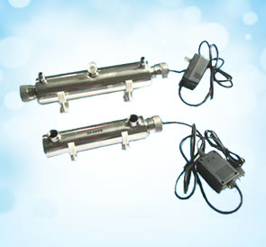
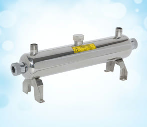

KCS/A — MONOLITHIC WITH CONTROL BOX

| Model | Power | Capacity | Lamp | Sight port | Dimensions (mm) | Port |
|---|---|---|---|---|---|---|
| KCS/A-23W | 23 W | 1.36 m³/h | 23 W × 1 | Yes | 500 × Φ89 × 150 | DN20 |
| KCS/A-40W | 40 W | 2.3 m³/h | 40 W × 1 | Yes | 920 × Φ102 × 190 | DN25 |
Small-Flow 254 nm Disinfection for Pure & Mineral Water
0.2–2.3 m³/h · >99% E. coli Kill in ~10 s · Threaded

KCS compact sterilizers are flow-through 254 nm units for small flows: fast kill (about 10 seconds of exposure at the rated dose inactivates over 99% of E. coli), small body, light weight and low power draw. Basic configuration across the series: high-quality UV lamp, stable electronic ballast, high-transmission quartz sleeve and a 304/316L stainless reactor.
Three forms cover the series: KCS/A monolithic with control box, KCS/C single-end models, and KCS/B double-ended with sight glass.

| Model | Power | Capacity | Lamp | Sight port | Dimensions (mm) | Port |
|---|---|---|---|---|---|---|
| KCS/A-23W | 23 W | 1.36 m³/h | 23 W × 1 | Yes | 500 × Φ89 × 150 | DN20 |
| KCS/A-40W | 40 W | 2.3 m³/h | 40 W × 1 | Yes | 920 × Φ102 × 190 | DN25 |

| Model | Power | Capacity | Lamp | Sight port | Dimensions (mm) | Port |
|---|---|---|---|---|---|---|
| KCS/C-10W | 10 W | 0.2 m³/h | 10 W × 1 | Optional | 260 × Φ51 | DN6 |
| KCS/C-14W | 14 W | 0.5 m³/h | 14 W × 1 | Optional | 350 × Φ51 | DN12 |
Single-end 4-pin lamps; a ballast-equipped variant is available with or without sight port.

| Parameter | Value |
|---|---|
| Voltage | 220 V |
| Form | Double-ended, integrated body |
| Connection | Threaded |
| Working pressure | 0.6 MPa |
KCS/A covers 1.36–2.3 m³/h with sight port; KCS/C covers 0.2–0.5 m³/h for RO machine outlets and labs.
Send your water analysis, target capacity and application. Konche will help select and configure the suitable system.
Get Expert Support →